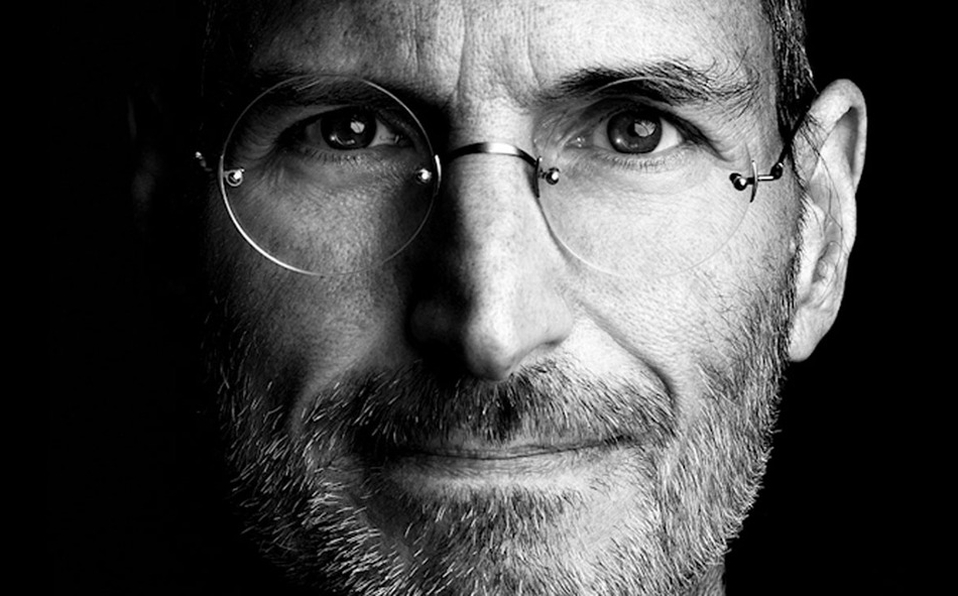

1 de abril de 1976, Los Altos, California, Estados Unidos Apple Inc. es una empresa estadounidense que diseña y produce equipos electrónicos, software y servicios en línea. Tiene su sede central en el Apple Park, en Cupertino (California, Estados Unidos) y la sede europea en la ciudad de Cork (Irlanda).3 Sus productos de hardware incluyen el teléfono inteligente iPhone, la tableta iPad, el ordenador personal Mac, el reproductor de medios portátil iPod, el reloj inteligente Apple Watch y el reproductor de medios digitales Apple TV. Entre el software de Apple se encuentran los sistemas operativos iOS, iPadOS, macOS, watchOS y tvOS, el explorador de contenido multimedia iTunes, la suite iWork (software de productividad), Final Cut Pro X (una suite de edición de vídeo profesional), Logic Pro (software para edición de audio en pistas de audio), Xsan (software para el intercambio de datos entre servidores) y el navegador web Safari..

Parte de nuestra historia La empresa operaba, en mayo de 2014, más de 408 tiendas propias en nueve países,4 miles de distribuidores (destacándose los distribuidores prémium o Apple Premium Resellers) y una tienda en línea (disponible en varios países) donde se venden sus productos y se presta asistencia técnica. De acuerdo con la revista Fortune, Apple fue la empresa más llamativa en el mundo entre 2008 y 2012.5 En 2015, se convirtió en la empresa más valiosa del mundo según el índice BrandZ al alcanzar los 247 000 millones de euros de valor.6 El 3 de agosto de 2018, según The Wall Street Journal, la compañía se convirtió en la primera empresa en lograr una capitalización de mercado de 1 billón (mil millardos) de dólares. Actualmente su valor se estima en unos 2,22 billones de dólares.